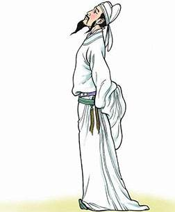
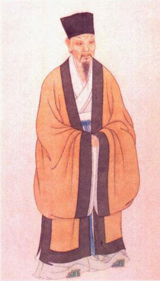

唐诗精选
客中作
兰陵美酒郁金香，玉碗盛来琥珀光。
但使主人能醉客，
不知何处是他乡。
诗文解释
兰陵的美酒散发出醇浓的郁金香味，用晶莹的玉碗盛来，闪烁着琥珀般的光彩。主人殷勤劝酒，客人尽情欢醉，不觉忘记自己身在异乡为客了。
词语解释
兰陵：在今山东枣庄。
郁金香：一种香草。古人用以浸酒，浸后酒色金黄。
琥珀：一种树脂化石，呈黄色或赤褐色，色泽晶莹。这里形容美酒色泽如琥珀。
诗文赏析
李白于天宝初年长安之行以后，移家东鲁。本诗作于东鲁兰陵，以兰陵为"客中"，可见为开元年间的作品。在繁荣的社会背景中，李白更是重友情，嗜美酒，爱游历祖国的河山景致，在他的心中都充满了美丽。这首诗表现了李白豪放不羁的个性和盛唐的繁荣景象。
本诗一反游子羁旅乡愁的古诗文传统，抒写了身虽为客，却乐而不觉身在他乡的乐观情感。

宋词精选
水调歌头
丙辰中秋，欢饮达旦，大醉，作此篇，兼怀子由。(序)
明月几时有，把酒问青天。不知天上宫阙，今夕是何年。我欲乘风归去，又恐琼楼玉宇，高处不胜寒。起舞弄清影，何似在人间？
转朱阁，低绮[qǐ]户，照无眠。不应有恨，何事长向别时圆？人有悲欢离合，月有阴晴圆缺，此事古难全。但愿人长久，千里共婵娟。
诗词解释
丙辰年的中秋节，高兴地喝酒直到第二天早晨，喝到大醉，写了这首词，同时思念弟弟苏辙。
明月从什么时候才开始出现的？我端起酒杯遥问苍天。不知道在天上的宫殿，今天晚上是何年何月。我想要乘御清风回到天上，又恐怕在美玉砌成的楼宇，受不住高耸九天的寒冷。翩翩起舞玩赏着月下清影，哪里比得上人间。
月儿转过朱红色的楼阁，低低地挂在雕花的窗户上，照着没有睡意的自己。明月不该对人们有什么怨恨吧，为什么偏在人们离别时才圆呢？人有悲欢离合的变迁，月有阴晴圆缺的转换，这种事自古来难以周全。只希望这世上所有人的亲人能平安健康，即便相隔千里，也能共享这美好的月光。
词语解释
丙辰：指公元1076年（宋神宗熙宁九年）。这一年苏轼在密州（今山东省诸城市）任太守。
达旦：到天亮。
子由：苏轼的弟弟苏辙的字，与其父苏洵、其兄苏轼并称"三苏"。
把酒：端起酒杯。把，执、持。
天上宫阙（què）：指月中宫殿。阙，古代城墙后的石台。
归去：回去，这里指回到月宫里去。
琼（qióng）楼玉宇：美玉砌成的楼宇，指想象中的仙宫。
不胜（shèng，旧时读shēng）经不住，承受不了。胜：承担、承受。
弄清影：意思是月光下的身影也跟着做出各种舞姿。弄：玩弄，欣赏。
何似：何如，哪里比得上。
转朱阁，低绮（qǐ）户，照无眠：月儿移动，转过了朱红色的楼阁，低低地挂在雕花的窗户上，照着没有睡意的人（指诗人自己）。朱阁：朱红的华丽楼阁。绮户： 雕饰华丽的门窗。
不应有恨，何事长（cháng）向别时圆：（月儿）不该（对人们）有什么怨恨吧，为什么偏在人们分离时圆呢？何事：为什么。
此事：指人的"欢""合" 和月的"晴""圆"。
但：只。
千里共婵（chán ）娟（juān）：只希望两人年年平安﹐虽然相隔千里，也能一起欣赏这美好的月光。共：一起欣赏。婵娟：指月亮。
诗词赏析
此词是中秋望月怀人之作，表达了对胞弟苏辙的无限怀念。词人运用形象描绘手法，勾勒出一种皓月当空、亲人千里、孤高旷远的境界氛围，反衬自己遣世独立的意绪和往昔的神话传说融合一处，在月的阴晴圆缺当中，渗进浓厚的哲学意味，可以说是一首将自然和社会高度契合的感喟作品。
词前小序说："丙辰中秋，欢饮达旦，大醉，作此篇，兼怀子由。"丙辰，是公元1076年（北宋神宗熙宁九年）。当时苏轼在密州（今山东诸城）做太守，中秋之夜他一边赏月一边饮酒，直到天亮，于是做了这首《水调歌头》。苏轼一生，以崇高儒学、讲究实务为主。但他也"龆龀好道"，中年以后，又曾表示过"归依佛僧"，是经常处在儒释道的纠葛当中的。每当挫折失意之际，则老庄思想上升，借以帮助自己解释穷通进退的困惑。公元1071年（熙宁四年），他以开封府推官通判杭州，是为了权且避开汴京政争的漩涡。公元1074年（熙宁七年）调知密州，虽说出于自愿，实质上仍是处于外放冷遇的地位。尽管当时"面貌加丰"，颇有一些旷达表现，也难以遮掩深藏内心的郁愤。这首中秋词，正是此种宦途险恶体验的升华与总结。"大醉"遣怀是主，"兼怀子由"是辅。对于一贯秉持"尊主泽民"节操的作者来说，手足分离和私情，比起廷忧边患的国势来说，毕竟属于次要的伦理负荷。此点在题序中并有深微的提示。

- 古代诗人画像
- 诗人年代排名
古代诗人年代排名
| 诗人名 | 诗人朝代 | 生猝年 |
|---|---|---|
| 李白 | 唐朝 | 701年-762年 |
| 苏轼 | 北宋 | 1037年-1101年 |
| 陆游 | 南宋 | 1125年-1210年 |